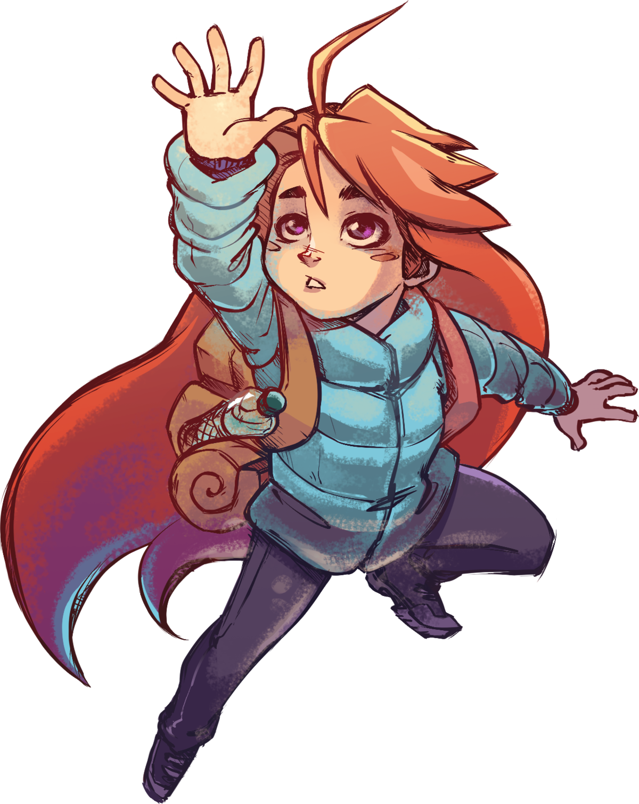
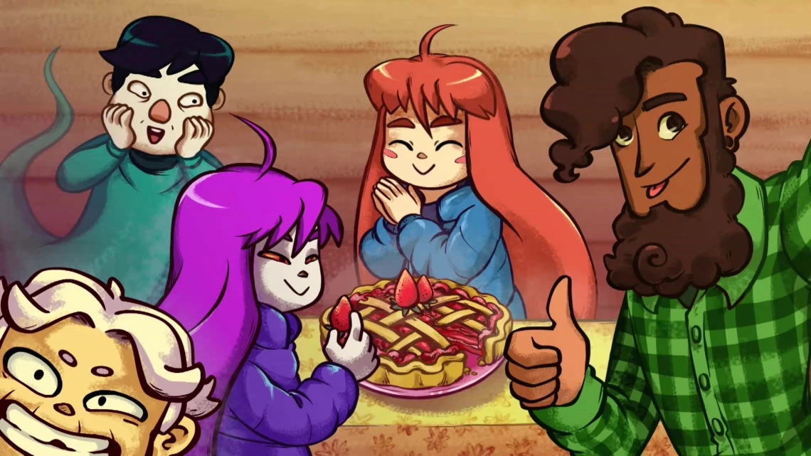

The story of Celeste follows our main protagonist Madeline as she arrives to Celeste Mountain. This Mountain is quite significant to Madeline as her goal is to traverse the mountain and reach the top of it by the end of her journey.
Madeline on this journey will go "chapters" (the indication for levels in this game) each one being hard than the last as you also gain new abilities and powers along the way. The beauty of the story with this game is that following Madeline you get to see how one would deal with anxiety and depression as they traverse a tough or new obstacle. The constant battle within oneself while also trying to meet a goal, meet new people or deal with the world around you I find to be always an interesting story; it's definitely one that is constantly used in media and video games a like. However in Celeste, it feels like a breathe of fresh air as you go through the game. What makes it feel like this is just the basis of what the story about, this isn't the average person who's unsure about saving the world. This is a story about an individual character who wants to themself by meeting a goal they've set on their own.
Now to tell you a bit about the gameplay. Celeste is a platformer that thrives well in it's genre with it's increase in difficulty as you progress through it. The game consists of many obstacles from spikes to moving platforms and even mechanics that cause you warp and bend the stage into new looks in order to progress through. What I believe seperates Celeste from the others is not only the mechanics to the game but also how beautiful the stages look as you play through them, trust if the difficult platforming is not something that'll have you stuck on a level then the stages will for sure with amazing the detail and how to they manage continue the aesthetic from stage to the other, it's comepletely mesmerizing at times and may even have you looking them up on google or any other site to use as your background wallpaper.
Celeste is a game thaat provides a journey worth going on, when you play this game it'll open your eyes to a perspective of how someone who's like Madeline deals with mental health. Things can be hard at times and there's going to be obstacles, especially those who deal with anxiety and depression on a daily basis. So playing a game that touches these topics I feel is not only a fun experience but definitely one you'll leave with learning more than when you started.